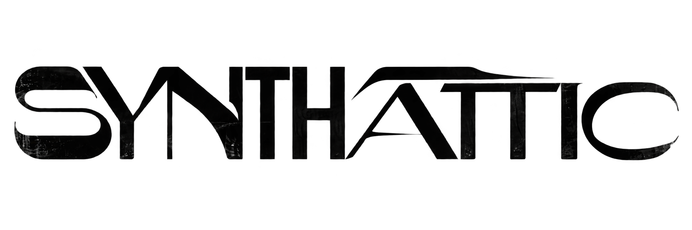
Producer & DJ
Based in India. Playing around the world.

From quiet mountain sessions to late-night dance floors, SYNTHATTIC builds atmospheric electronic music that moves between introspection and release.
STREAM SYNTHATTIC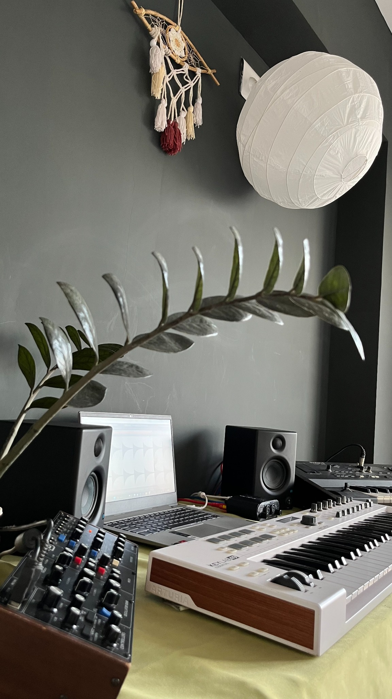
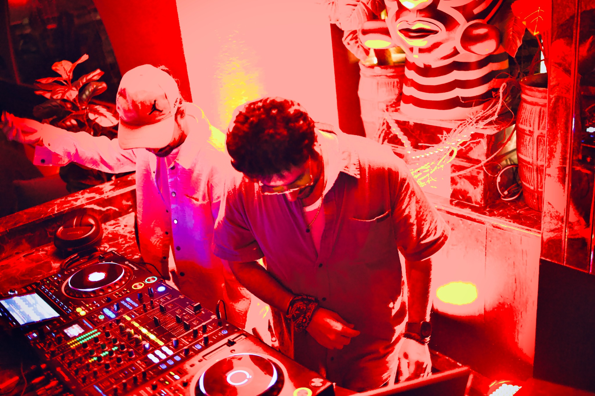

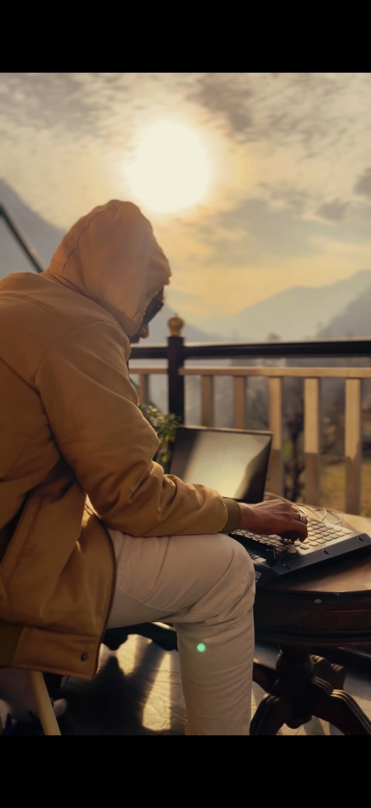
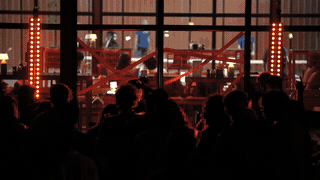
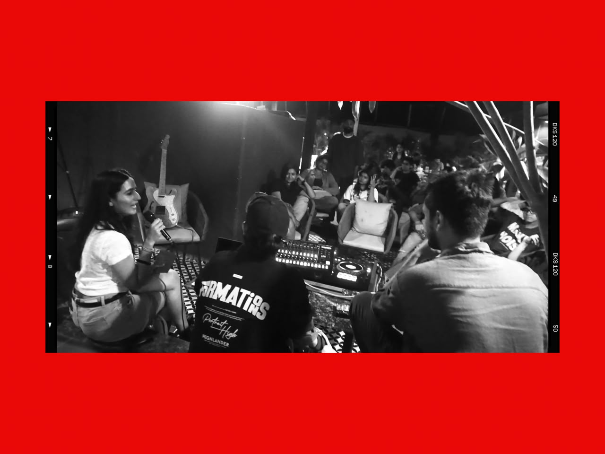
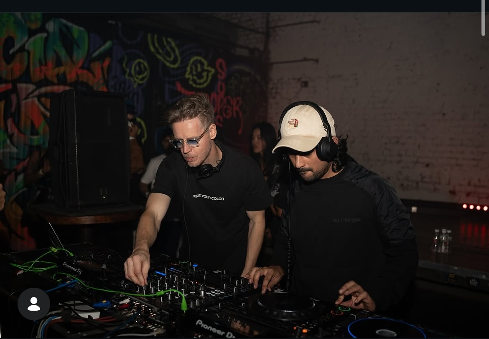
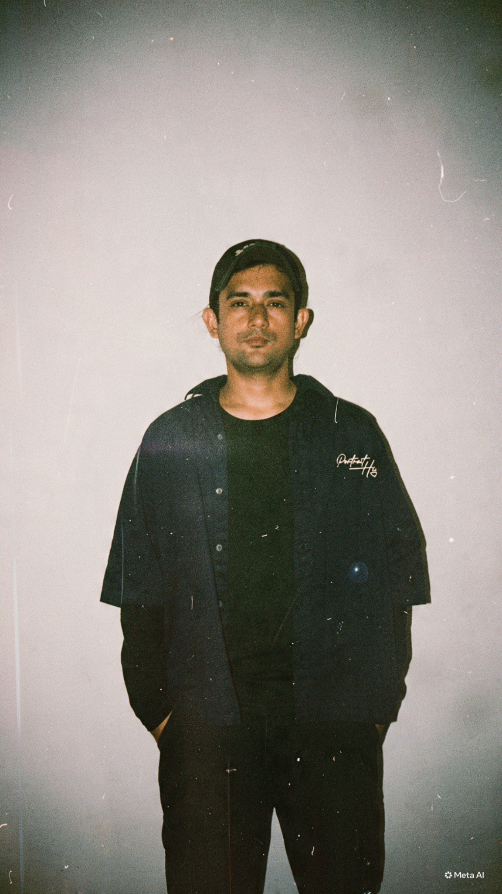
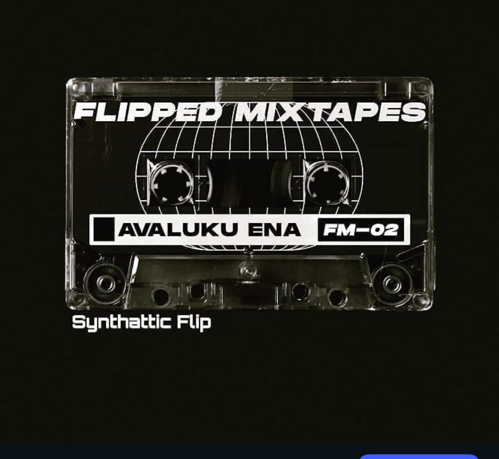
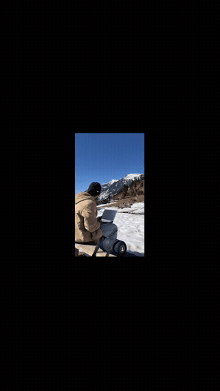
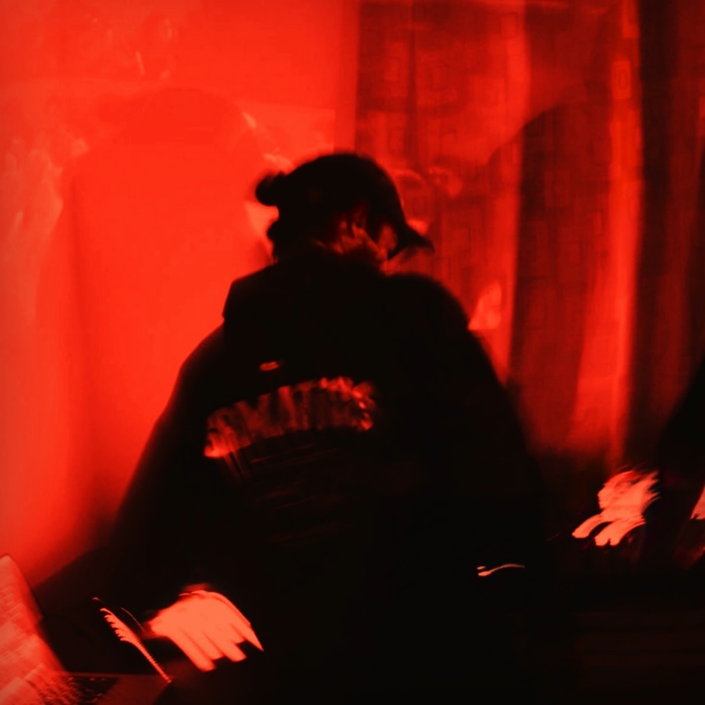
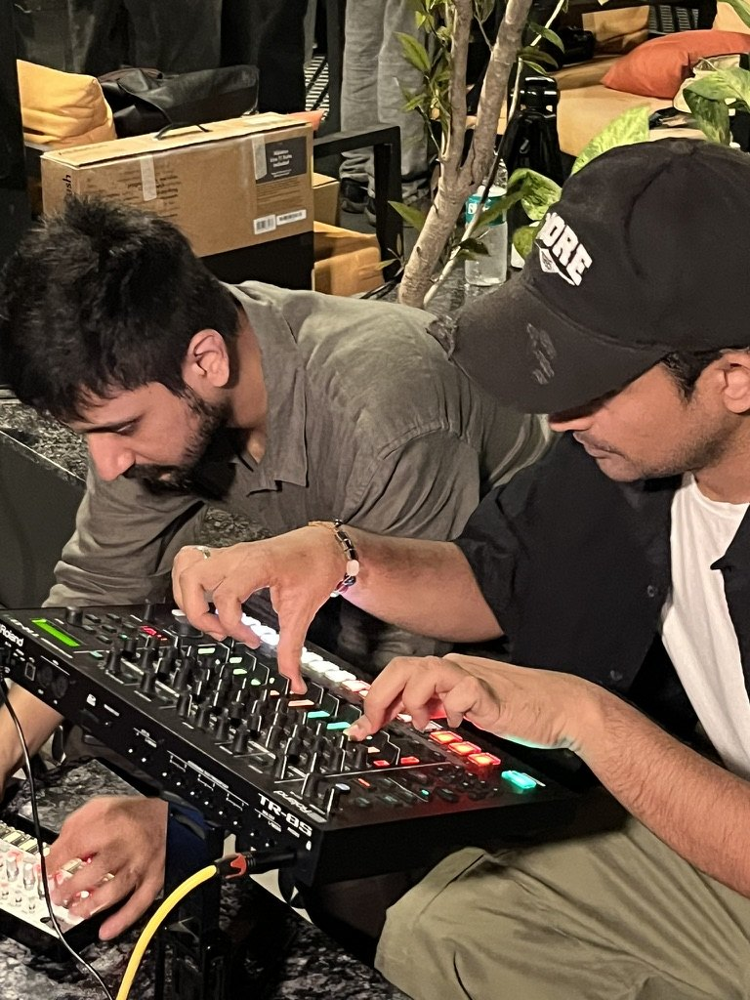
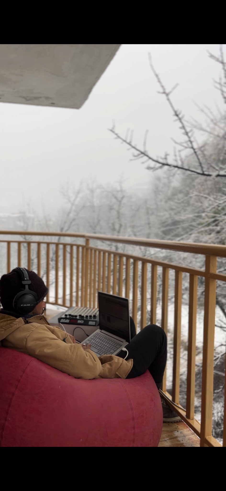

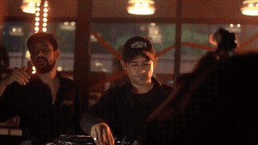
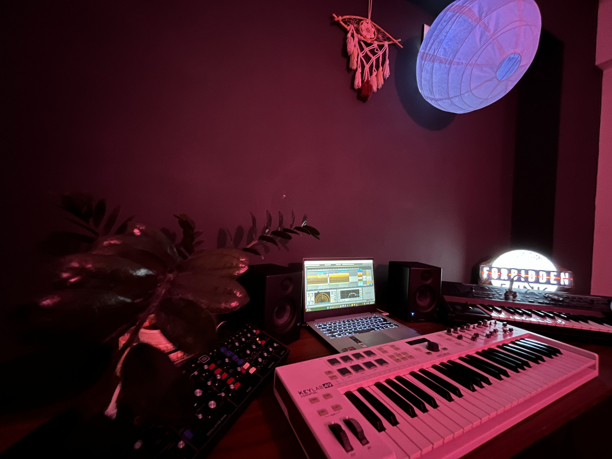
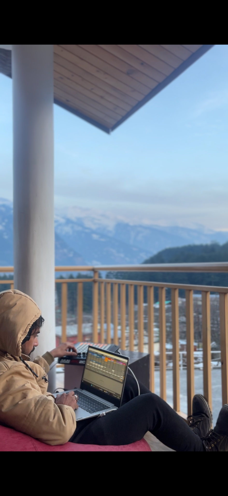
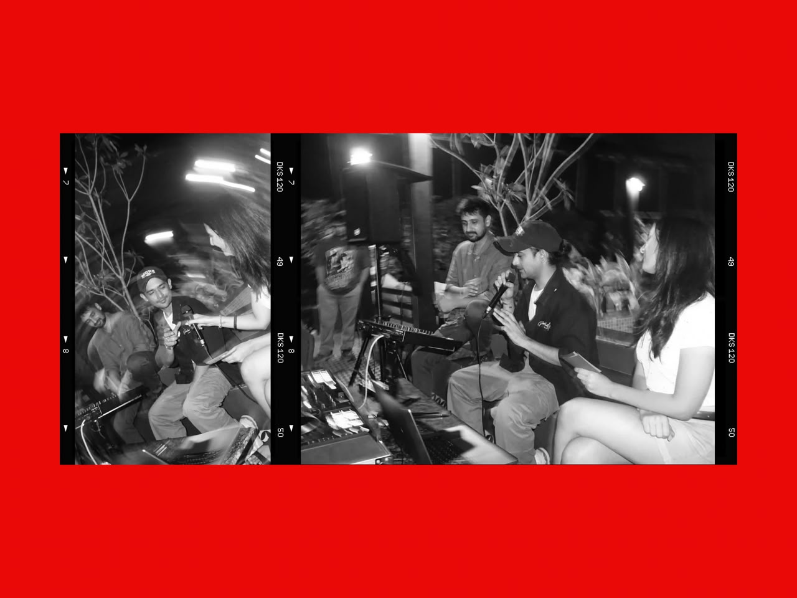
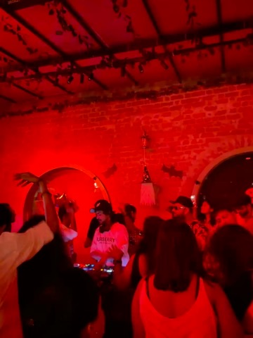
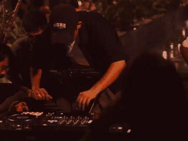

Out there.
In here.
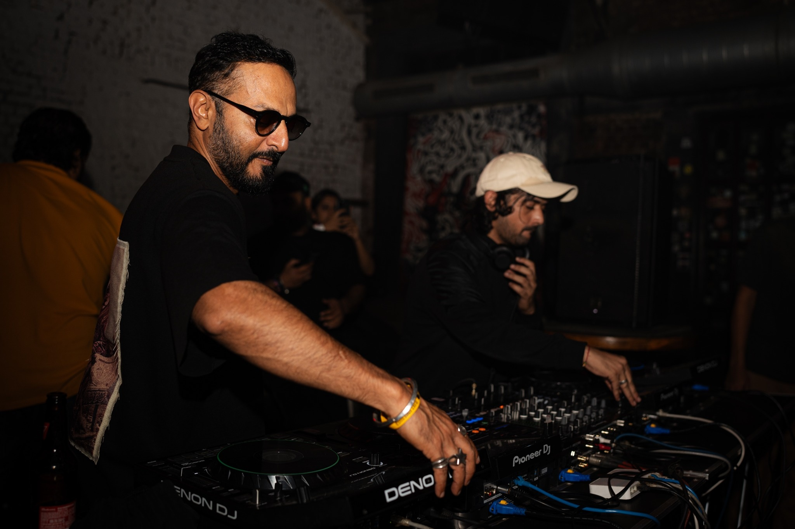
Always in motion.
Stream
SYNTHATTIC.
Listen on your favourite platforms.
A little about
the sound.
SYNTHATTIC is the world Ashutosh Purohit builds through sound. A producer and DJ who has spent nearly a decade shaping his sound in the studio and behind the decks.
His music moves between atmospheric electronica, Afro inspired club rhythms, progressive and organic house, techno, and dub leaning moods. The thread running through it is a feel for detail: layered textures, considered percussion, and a balance between introspection and dance floor energy.
His releases and press materials place him in the wider electronic music conversation alongside names including John 00 Fleming, Pavel Petrov, Joris Vroon, AFFKT, Rafael Cerato, Enamour, Massane, Frankey & Sandrino, Nikhil Chinappa, Citizen Kain, Metodi Histrov, and Minitech Project.
In good
company.
A selection of artists connected to SYNTHATTIC’s wider electronic music world, drawn from the supplied press materials.
Let’s talk.
For bookings, press, festivals, support slots and collaborations.